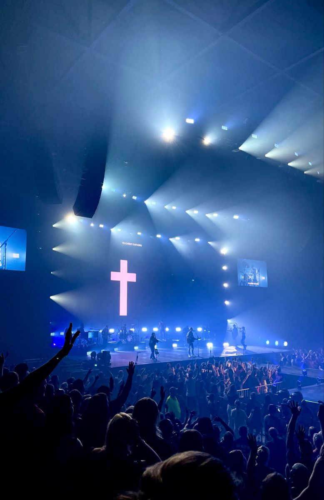
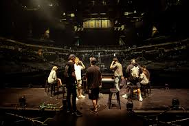

Elevation Worship Band
We are a worship band
Elevation Worship is a contemporary worship music band from Elevation Church in Charlotte, North Carolina. Known for their powerful worship songs and dynamic performances, they have become a significant influence in the Christian music scene. Through heartfelt lyrics and uplifting melodies, Elevation Worship leads listeners into meaningful moments of praise, reflection, and connection with God. This website is dedicated to exploring their music, story, and influence in modern worship.
About Elevation Worship
Elevation Worship was formed in 2007 as part of Elevation Church, led by Pastor Steven Furtick. The band's mission is to write and lead songs that help people experience a closer relationship with God. Their music blends modern sounds with meaningful biblical messages, making worship accessible to people of all ages. Over the years, Elevation Worship has released numerous albums and singles that have resonated with audiences worldwide.
Band Members
Elevation Worship features a diverse group of worship leaders, vocalists, and musicians who serve at Elevation Church. Some well-known members include Chris Brown, Brandon Lake, Tiffany Hudson, and Jonsal Barrientes. Each member brings a unique voice and musical style that contributes to the band's powerful worship experience.
Music And Albums
Elevation Worship Band has released numerous albums and songs that are widely used in churches and personal worship. Their music often blends modern worship sounds with deep, meaningful lyrics. Many of their songs focus on themes such as faith, surrender, victory, and God's presence, making them relatable and impactful for listeners across the world.
Independent Album (2007-2010)
Elevation Worship began in 2007 at Elevation Church in Charlotte. The band released four independent albums prior to signing with Essential Records. Featuring the song "Give Me Faith", Kingdom Come was the band's first album to break through on the Billboard charts.
2010s
The band released their debut live album, For the Honor, in 2011. Their second album, Nothing Is Wasted, came out in 2013 and reached No. 1 on the Christian Albums chart.The band's second album with the Essential label, Nothing Is Wasted, was released on February 19, 2013. A deluxe edition of the album also included studio recordings of each song. It reached No. 1 on the Christian Albums chart and was No. 41 on the Billboard 200
2020s
Graves Into Gardens, the group's twelfth album, was released in 2020. They collaborated with Maverick City Music on Old Church Basement in 2021. Their 2022 live album, Lion, debuted at No. 2 on the Billboard Christian Albums chart. The 2023 album, Can You Imagine?, topped the Christian Albums chart.

Worship Experience And Popular Songs
Elevation Worship Band's music creates an atmosphere that encourages reflection, prayer, and praise. Through live worship events, recordings, and online platforms, the band has touched lives. Some of Elevation Worship Band's most popular songs include:
- Here as In Heaven
- Graves into Gardens
- O Come to the Altar
- Lion
Awards and Recognition
Elevation Worship has earned significant recognition within the Christian music industry, including Grammy Awards and GMA Dove Awards. Tracks such as “O Come to the Altar,” “Do It Again,” and “Graves Into Gardens” have become modern worship anthems.